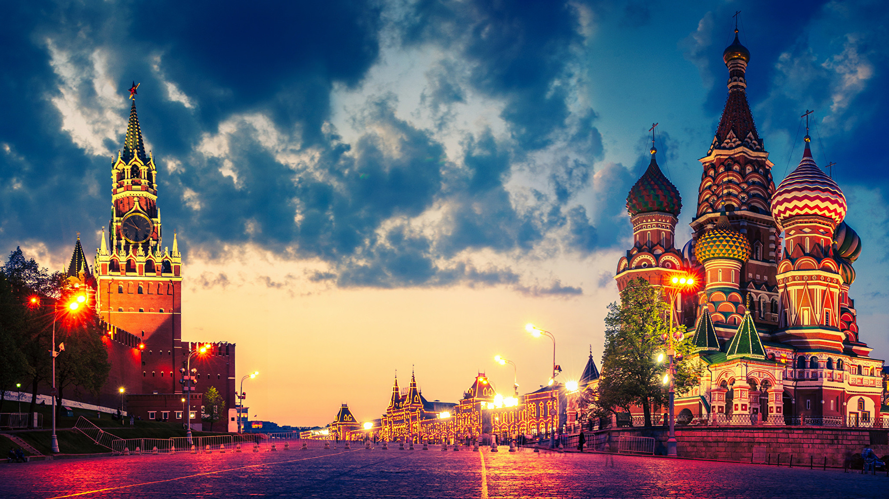

Московская агломерация — одна из крупнейших агломераций в России и Европе, охватывающая не только саму Москву, но и прилегающие города и районы. Это мегаполис, который играет ключевую роль в экономике, культуре и политике страны. Москва является финансовым и деловым центром России, с огромным количеством офисов, торговых и культурных объектов. В пределах агломерации сосредоточено множество крупных предприятий и организаций, создающих рабочие места и привлекающих специалистов со всей страны. Важным элементом Москвы является её транспортная инфраструктура, которая соединяет город с другими регионами и улучшает логистику.
В московской агломерации сосредоточено более 20 миллионов человек, что делает её одной из самых густонаселённых агломераций. Мегаполис продолжает активно расти, расширяя свои границы, строя новые жилые комплексы, бизнес-центры и развлекательные зоны. Москва и её окрестности характеризуются высоким уровнем жизни, что привлекает как россиян, так и иностранных инвесторов и специалистов. В последние годы значительно улучшилась ситуация с экологией, несмотря на высокий уровень загрязнения, за счёт создания новых зелёных зон и улучшения качества воздуха. С каждым годом столица России становиться всё более удобной для жизни и работы, а московская агломерация продолжает развиваться и влиять на различные аспекты жизни страны.